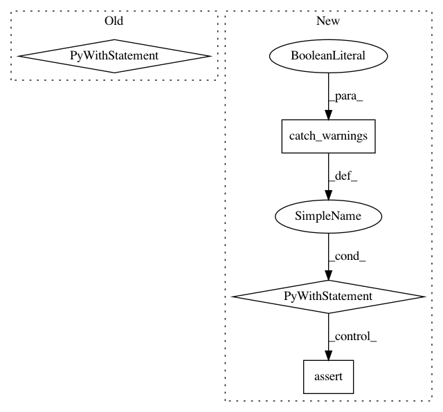

3bb4e7c9d8148da426cba84f884b7b59d44d074a,pyemma/coordinates/tests/test_traj_info_cache.py,TestTrajectoryInfoCache,test_no_sqlite,#TestTrajectoryInfoCache#,290
Before Change
return __import__(name, *args)
from pyemma.coordinates.data.util import traj_info_cache
with mock.patch("pyemma.coordinates.data.util.traj_info_cache", "__import__",
side_effect=import_mock, create=True):
TrajectoryInfoCache._instance = None
TrajectoryInfoCache(self.tempfile)
if __name__ == "__main__":
unittest.main()
After Change
try:
sys.meta_path.insert(0, meta_ldr())
// import sqlite3
with warnings.catch_warnings(record=True) as cw:
db = TrajectoryInfoCache()
self.assertNotIsInstance(db._database, SqliteDB)
self.assertEqual(len(cw), 1)
self.assertIn("sqlite3 package not available", cw[0].message.args[0])
finally:
del sys.meta_path[0]
In pattern: SUPERPATTERN
Frequency: 3
Non-data size: 4
Instances
Project Name: markovmodel/PyEMMA
Commit Name: 3bb4e7c9d8148da426cba84f884b7b59d44d074a
Time: 2016-08-22
Author: m.scherer@fu-berlin.de
File Name: pyemma/coordinates/tests/test_traj_info_cache.py
Class Name: TestTrajectoryInfoCache
Method Name: test_no_sqlite
Project Name: scikit-learn-contrib/categorical-encoding
Commit Name: aa24d65c8a7fd493c18b95a4ee8b5304fb105512
Time: 2019-03-21
Author: datarian@againstthecurrent.ch
File Name: category_encoders/tests/test_ordinal.py
Class Name: TestOrdinalEncoder
Method Name: test_inverse_transform_HaveUnknown_ExpectWarning
Project Name: scikit-learn-contrib/categorical-encoding
Commit Name: aa24d65c8a7fd493c18b95a4ee8b5304fb105512
Time: 2019-03-21
Author: datarian@againstthecurrent.ch
File Name: category_encoders/tests/test_ordinal.py
Class Name: TestOrdinalEncoder
Method Name: test_inverse_transform_BothFieldsAreReturnNanWithNan_ExpectValueError